7 Indivitual tree dectection and segmentation
Individual tree detection (ITD) is the process of spatially locating trees and extracting height information. Individual tree segmentation (ITS) is the process of individually delineating detected trees. In lidR, detecting and segmenting functions are decoupled to maximize flexibility. Tree tops are first detected using the locate_trees() function, followed crown delineation using segment_trees(). In the following section we will use the MixedConifer.laz data set, which is included internally within lidR to demonstrate both ITD and ITS with reproducible examples. We will also generate a CHM (section 6) to help visualize the results.
LASfile <- system.file("extdata", "MixedConifer.laz", package="lidR")
las <- readLAS(LASfile, select = "xyzr", filter = "-drop_z_below 0")
chm <- rasterize_canopy(las, 0.5, pitfree(subcircle = 0.2))
plot(las, bg = "white", size = 4)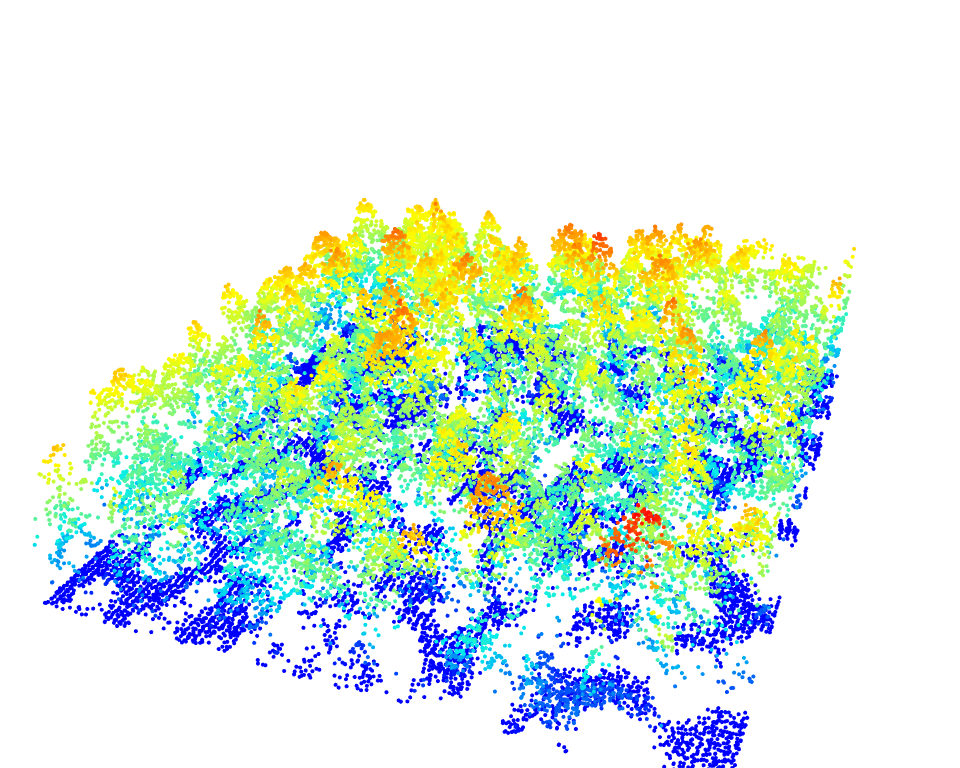
7.1 Individual Tree Detection (ITD)
Tree tops can be detected by applying a Local Maximum Filter (LMF) on the loaded data set. The LMF in lidR is point cloud-based, meaning that it finds the tree tops from the point cloud without using any raster. The processing, however is actually very similar. For a given point, the algorithm analyzes neighbourhood points, checking if the processed point is the highest. This algorithm can be applied with the lmf() function.
7.1.1 Local Maximum Filter with fixed windows size
The LMF can be applied with a constant size windows. Here with a windows size of ws = 5 meters meaning that for a given point the algorithm looks to the neigbourhood points within a 2.5 radius circle to figure out if the point is the local highest. While the algorithm does not need any CHM to work we chose to display the results on top of a CHM for better visualization.
ttops <- locate_trees(las, lmf(ws = 5))
plot(chm, col = height.colors(50))
plot(sf::st_geometry(ttops), add = TRUE, pch = 3)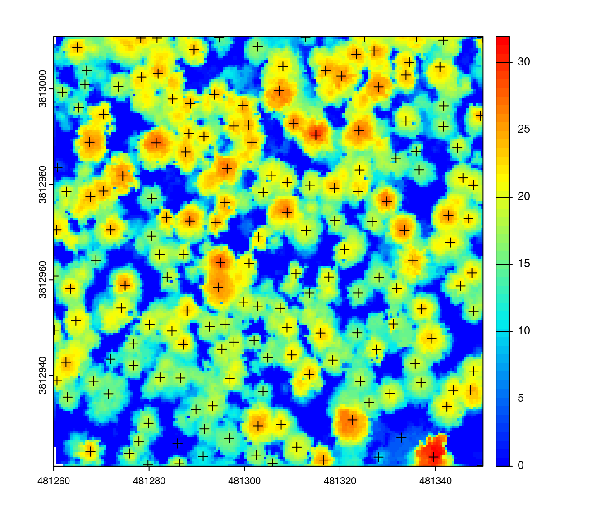
Tree detection results can also be visualized in 3D!
x <- plot(las, bg = "white", size = 4)
add_treetops3d(x, ttops)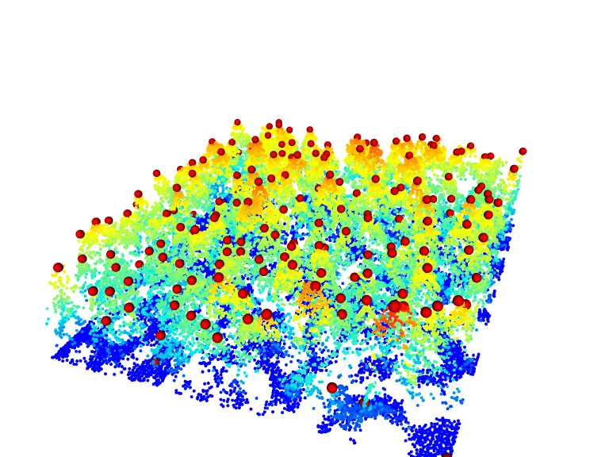
The number of detected trees is correlated to the ws argument. Small windows sizes usually gives more trees, while large windows size generally miss smaller trees that are “hidden” by big trees that contain the highest points in the neighbourhood. This can be seen in the figure below where too many trees are found with a small window size and only the dominant trees are found with a large windows size.
ttops_3m <- locate_trees(las, lmf(ws = 3))
ttops_11m <- locate_trees(las, lmf(ws = 11))
par(mfrow=c(1,2))
plot(chm, col = height.colors(50))
plot(sf::st_geometry(ttops_3m), add = TRUE, pch = 3)
plot(chm, col = height.colors(50))
plot(sf::st_geometry(ttops_11m), add = TRUE, pch = 3)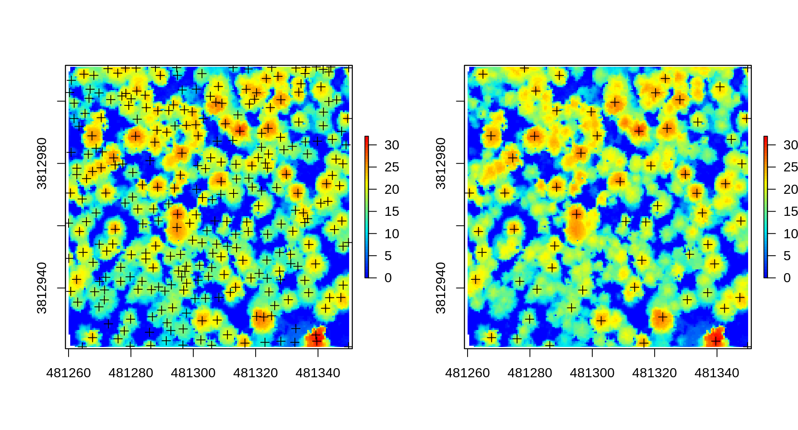
7.1.2 Local Maximum Filter with variable windows size
The examples above demonstrate the lmf() function with a constant window size. A large windows is suitable for large scattered trees while a small windows size if preferable for small and close trees. In reality trees of variable sizes may be present in a single scene leading to sub-optimal outputs. To overcome this issue, a windows size that adapts to the height of pixels or height of the points in our case becomes necessary.
For example, a point at 30 m (a big tree) will be tested with a large window, while a point at 10 m (a smaller tree) will be tested with a smaller window. The window size can therefore be defined as a function of height. Tall trees have comparatively larger crowns, needing larger window sizes to accurately detect their treetops. Variable window sizes are especially suitable for stands of more complex structures, or when tree detection is performed on larger areas, covering heterogeneous stands.
In lidR a user can design a function that computes a windows size as a function of point (or pixel) height. When designing a function to define the window size based on point heights we need to determine what the minimum and maximum window size should be related to the minimum and maximum tree heights. In general, the minimum window size should not be smaller than 3 meters. Below we show an example where the windows size is related to the point height with an affine relationship. When a point is at 0 the windows size is 3 meters. At 10 m it is 4 m and so on.
f <- function(x) {x * 0.1 + 3}
heights <- seq(0,30,5)
ws <- f(heights)
plot(heights, ws, type = "l", ylim = c(0,6))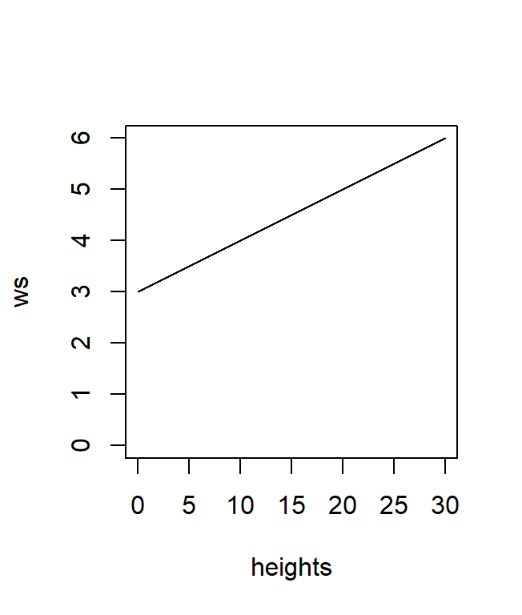
When applied within lmf(), the function yields the following result:
ttops <- locate_trees(las, lmf(f))
plot(chm, col = height.colors(50))
plot(sf::st_geometry(ttops), add = TRUE, pch = 3)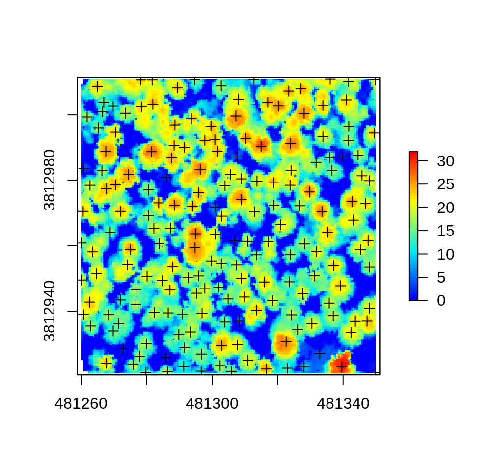
There is no intrinsic limitation to the user-defined function. One does however need to pay attention to special cases. For example, if a point is below 0 m the function above may compute a negative windows size and the detection will fail. Similarly, if an outlier is encountered a massive window may be computed and lead to suspicious results. We therefore recommend using a more robust function with some built in thresholds.
In the next example any points below 2 m will equate to a window size of 3 m, while points above 20 meters equate to a window size of 5 m. Anything between 2 and 20 meter will have a non-linear relationship (for the need of the demo).
f <- function(x) {
y <- 2.6 * (-(exp(-0.08*(x-2)) - 1)) + 3
y[x < 2] <- 3
y[x > 20] <- 5
return(y)
}
heights <- seq(-5,30,0.5)
ws <- f(heights)
plot(heights, ws, type = "l", ylim = c(0,5))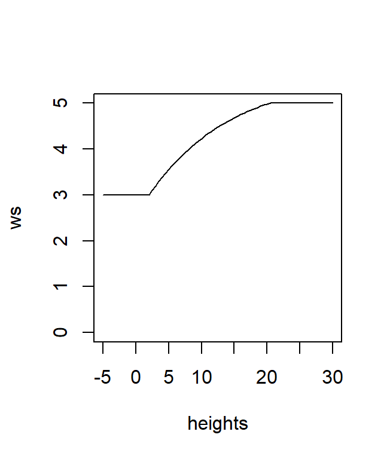
7.1.3 Local Maximum Filter on a CHM
So far tree detection was performed on a point cloud. A CHM can however also be used to find trees instead of the point cloud. This is also a perfectly valid way to process ALS data. Performing the detection on a CHM is faster because there are less data to process, but it is also more complex because the output depends on how the CHM has been built. The spatial resolution (i.e. pixel size), the algorithm used (see section 6), and any additional post-processing steps will influence tree detection results.
In the examples below we run tree detection on CHMs generated with different algorithms (p2r, pitfree), different resolutions (0.5 and 1 m), and different post-processing smoothing steps with a median filter applied.
First the different CHMs are generated:
# Point-to-raster 2 resolutions
chm_p2r_05 <- rasterize_canopy(las, 0.5, p2r(subcircle = 0.2), pkg = "terra")
chm_p2r_1 <- rasterize_canopy(las, 1, p2r(subcircle = 0.2), pkg = "terra")
# Pitfree with and without subcircle tweak
chm_pitfree_05_1 <- rasterize_canopy(las, 0.5, pitfree(), pkg = "terra")
chm_pitfree_05_2 <- rasterize_canopy(las, 0.5, pitfree(subcircle = 0.2), pkg = "terra")
# Post-processing median filter
kernel <- matrix(1,3,3)
chm_p2r_05_smoothed <- terra::focal(chm_p2r_05, w = kernel, fun = median, na.rm = TRUE)
chm_p2r_1_smoothed <- terra::focal(chm_p2r_1, w = kernel, fun = median, na.rm = TRUE)Then the same tree detection routine with a constant windows size of 5 m is applied to each CHM:
ttops_chm_p2r_05 <- locate_trees(chm_p2r_05, lmf(5))
ttops_chm_p2r_1 <- locate_trees(chm_p2r_1, lmf(5))
ttops_chm_pitfree_05_1 <- locate_trees(chm_pitfree_05_1, lmf(5))
ttops_chm_pitfree_05_2 <- locate_trees(chm_pitfree_05_2, lmf(5))
ttops_chm_p2r_05_smoothed <- locate_trees(chm_p2r_05_smoothed, lmf(5))
ttops_chm_p2r_1_smoothed <- locate_trees(chm_p2r_1_smoothed, lmf(5))Finally the detection results are visualized to see the various output found as a function of the CHM building choices:
par(mfrow=c(3,2))
col <- height.colors(50)
plot(chm_p2r_05, main = "CHM P2R 0.5", col = col); plot(sf::st_geometry(ttops_chm_p2r_05), add = T, pch =3)
plot(chm_p2r_1, main = "CHM P2R 1", col = col); plot(sf::st_geometry(ttops_chm_p2r_1), add = T, pch = 3)
plot(chm_p2r_05_smoothed, main = "CHM P2R 0.5 smoothed", col = col); plot(sf::st_geometry(ttops_chm_p2r_05_smoothed), add = T, pch =3)
plot(chm_p2r_1_smoothed, main = "CHM P2R 1 smoothed", col = col); plot(sf::st_geometry(ttops_chm_p2r_1_smoothed), add = T, pch =3)
plot(chm_pitfree_05_1, main = "CHM PITFREE 1", col = col); plot(sf::st_geometry(ttops_chm_pitfree_05_1), add = T, pch =3)
plot(chm_pitfree_05_2, main = "CHM PITFREE 2", col = col); plot(sf::st_geometry(ttops_chm_pitfree_05_2), add = T, pch =3)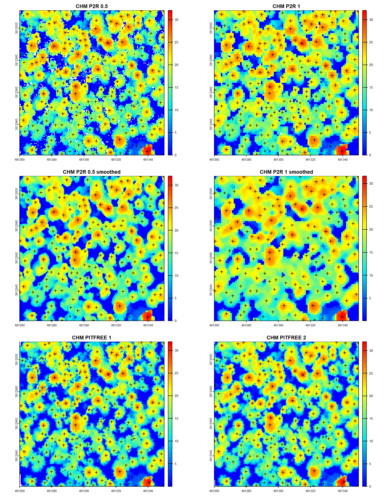
7.2 Individual Tree Segmentation (ITS)
While individual tree detection provides very useful information about tree density and size, one may want to go further to segment and extract each tree individually. Several algorithms are available in lidR and can be divided in two families.
- Point cloud-based that perform without a CHM.
- Raster-based that perform with a CHM.
Each family can be divided into two sub families
- Algorithms that work in two steps - Individual tree detection followed by segmentation.
- Algorithms that are all-in-one.
In this section we won’t go through all of these possibilities, but its important to recognize that all algorithms are not well suited to every context. In the examples below we used the dalponte2016() algorithm, because we found it to perform best using the example data.
7.2.1 Segmentation of the point-cloud
Even when the algorithm is raster-based (which is the case of dalponte2016()), lidR segments the point cloud and assigns an ID to each point by inserting a new attribute named treeID in the LAS object. This means that every point is associated with a particular tree. This is because lidR is point cloud oriented and we want to provide an immediate way to be able to access a segmented point cloud not the segmented raster.
algo <- dalponte2016(chm_p2r_05_smoothed, ttops_chm_p2r_05_smoothed)
las <- segment_trees(las, algo) # segment point cloud
plot(las, bg = "white", size = 4, color = "treeID") # visualize trees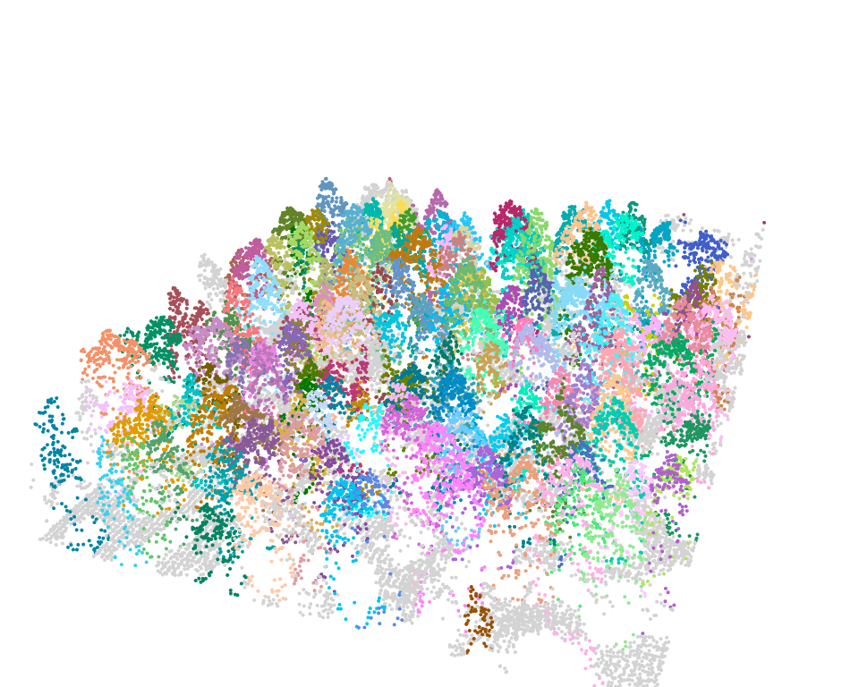
We assign an ID to each point because it enables interesting analyses at the point-cloud level. This could involve extracting every tree to derive measurements. In the following we extracted and displayed the tree number 110.
tree110 <- filter_poi(las, treeID == 110)
plot(tree110, size = 8, bg = "white")
lidR provides functions that can be used following segment_trees(), like delineation of crown shapes using crown_metrics(). This function computes the hulls (either convex or concave) of each tree as well as user-defined metrics (see also sections 8, 9, 10, 11, 12 and 13):
crowns <- crown_metrics(las, func = .stdtreemetrics, geom = "convex")
plot(crowns["convhull_area"], main = "Crown area (convex hull)")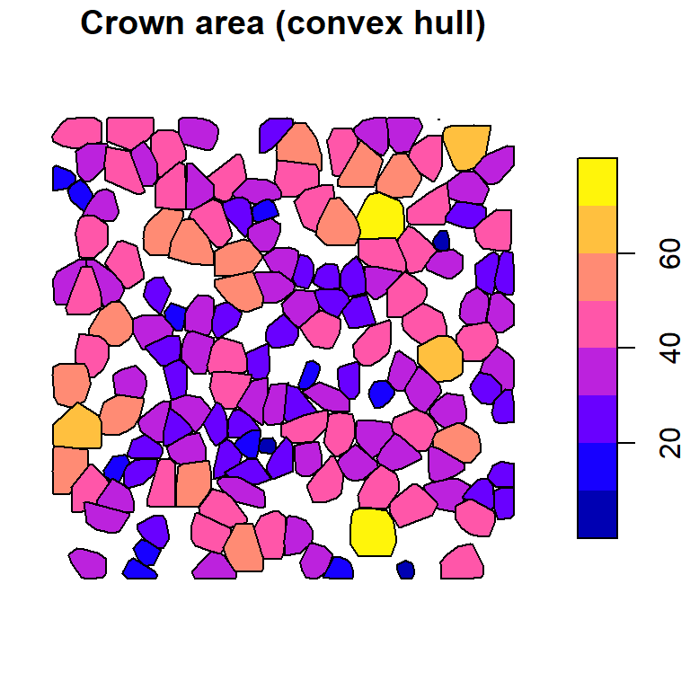
7.2.2 Segmentation of the CHM
While point cloud segmentation is standard in lidR, users may only have access to a CHM. There are many reasons for only using a CHM, and this is why raster-based methods can be run standalone outside segment_trees(). Whether using the point cloud or a raster, segmentation results will be exactly the same. The difference will be the data format of the segmentation result. In lidR, a LAS object will gain a treeID attribute, while for rasters, delineated crowns are returned in a raster format. To work outside segment_trees() it suffices to call the function standalone like this:
algo <- dalponte2016(chm_p2r_05_smoothed, ttops_chm_p2r_05_smoothed)
crowns <- algo()
plot(crowns, col = pastel.colors(200))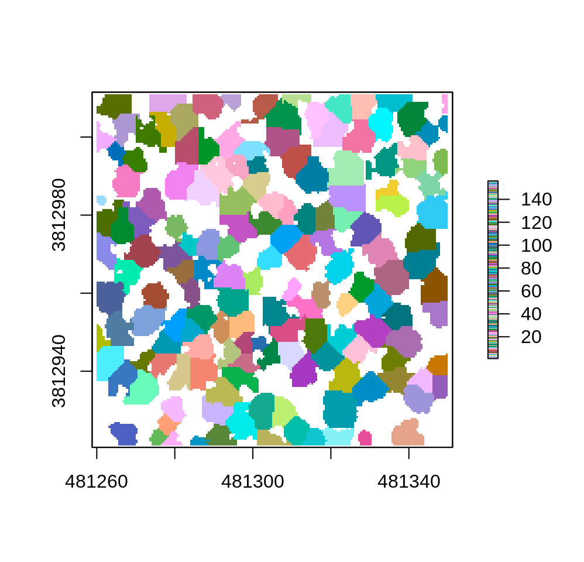
The output is a raster, for which lidR does not provide any processing tools. At this stage it is up to the user to find the required tools to perform more analysis. The terra package is a good place to start!
7.2.3 Comparaison of tree segmentations
At the point cloud level it’s pretty easy to compare tree segmentations by choosing a different attribute names for each method. For example we can compare dalponte2016 (which is a raster based methods in two steps) and li2012 (which is an “all-in-one” point cloud based method) side by side.
algo1 <- dalponte2016(chm_p2r_05_smoothed, ttops_chm_p2r_05_smoothed)
algo2 <- li2012()
las <- segment_trees(las, algo1, attribute = "IDdalponte")
las <- segment_trees(las, algo2, attribute = "IDli")
x <- plot(las, bg = "white", size = 4, color = "IDdalponte", colorPalette = pastel.colors(200))
#> The argument 'coloPalette' is deprecated. Use 'pal' instead
plot(las, add = x + c(100,0), bg = "white", size = 4, color = "IDli", colorPalette = pastel.colors(200))
#> The argument 'coloPalette' is deprecated. Use 'pal' instead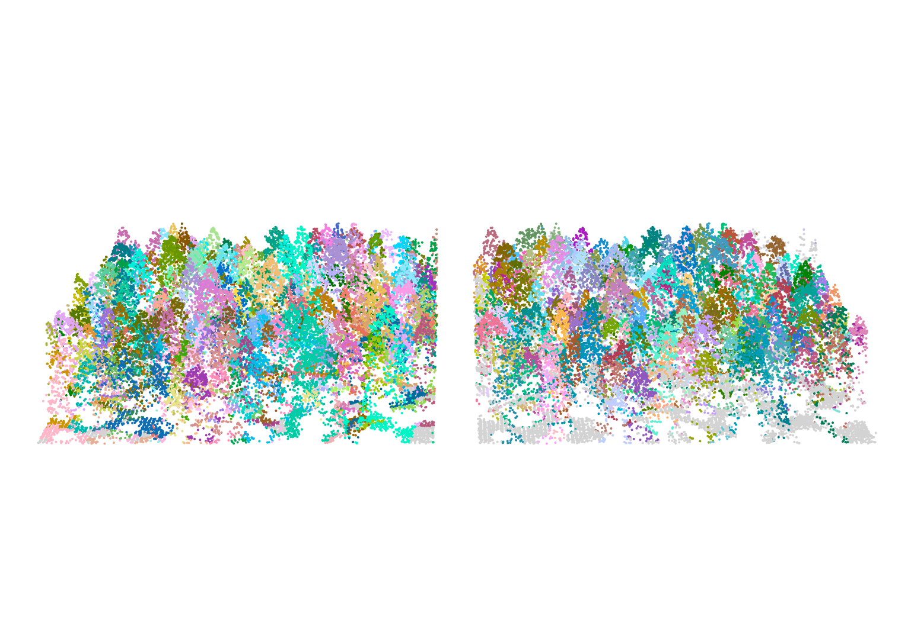
By comparing their crowns with crown_metrics() we can more easily see that the li2012 algorithm doesn’t perform well in this example with default parameters - maybe some parameter tuning can lead to better results!
crowns_dalponte <- crown_metrics(las, func = NULL, attribute = "IDdalponte", geom = "concave")
crowns_li <- crown_metrics(las, func = NULL, attribute = "IDli", geom = "concave")
par(mfrow=c(1,2),mar=rep(0,4))
plot(sf::st_geometry(crowns_dalponte), reset = FALSE)
plot(sf::st_geometry(crowns_li), reset = FALSE)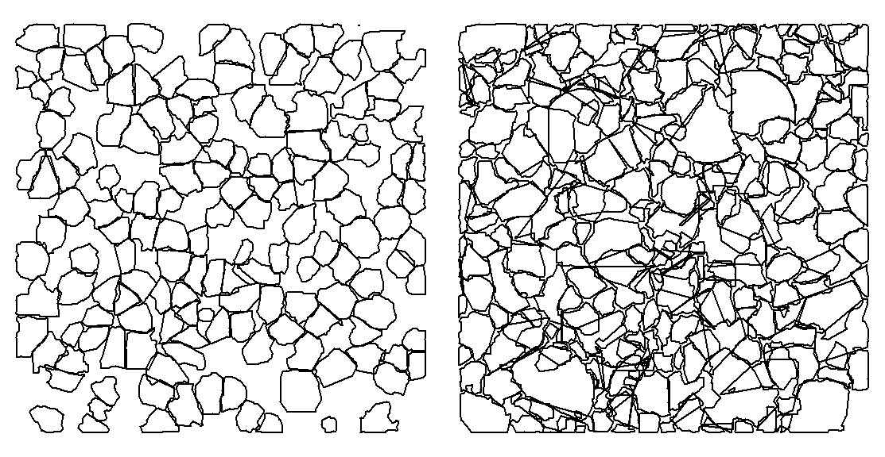